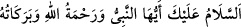
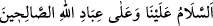
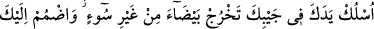
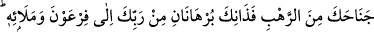
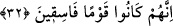
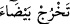
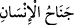
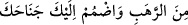
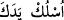
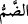

Denilmiştir ki: Peygamberimiz (s.a.) ile Mûsâ (a.s.) arasındaki fark ne kadar
büyüktür! Mûsâ (a.s.) Allah’ın hitabını işitmekten döndü, bir yılan getirdi ve onu
düşmanına musallat etti. Peygamberimiz (s.a.), Allah’ın en yakınına gece yolculuğu
(isra-miraç) yaptı da Allah ona orada vahyettiğini vahyetti. Sonra döndü ümmetine
münâcât olan namazı getirdi. Ona denildi ki: “
Selâm
sana olsun ey Peygamber, Allah’ın rahmeti ve bereketi üzerine olsun.” Peygamberimiz
(s.a) de şöyle mukâbele de bulundu: “
Selâm bizim üzerimize
ve Allah’ın sâlih kullarının üzerine olsun.”
32. “Elini koynuna sok; kusursuz, bembeyaz çıkacaktır. Korkudan (açılan)
kollarını kendine çek. İşte bu ikisi Firavun ve onun adamlarına karşı Rabbin
tarafından iki kesin delildir. Çünkü onlar, yoldan çıkan bir kavim olmuşlardır” (diye
seslenildi).
“Elini” elbisenin içine, “koynuna sok; kusursuz, bembeyaz çıkacaktır.”
Mûsâ (a.s.)’ın giydiği elbise; yünden yapılmış, kolu sadece dirseklere kadar uzanan
ve gömlek yerine giyilen bir elbisedir.
“
bembeyaz çıksın” cümlesi, hal cümlesidir. Yâni güneş ışığı gibi parlayarak,
baras vb. deri hastalığı ve kusuru olmaksızın çıksın, demektir. Onun beyazlığı, alaca
hastalığının beyazlığı gibi hoşa gitmeyen ve nefret edilen beyazlık değildir.
“Korkudan (açılan) kollarını kendine çek.”
“__WORD__ ifâdesi, insanın yanı, pazusu ve koltuğu anlamına gelir.
Denilir ki: Elin tamamı cenahtır. Yâni iki elini açmış, bunlarla yılandan korunarak,
korkan kimsenin sağ elini sol pazusunun altına, yahut öbürünü diğer tarafına sokmasına
veyahut her ikisni de koynuna sokmasına benzer.
Bu durumda “
Korkudan (açılan) kollarını kendine çek”
cümlesi, bir gayeye binaen yukarıdaki
“__WORD__ (elini koynuna sok” âyetinin tekrarı hükmünde olup düşman karşısında
cesaretliliği ve bir mûcîzenin zuhûrunun başlangıcını gösterir. Buradaki “
ellerini
çekmek, toplamak” ifâdesiyle, asâ yılana döndüğünde Mûsâ (a.s.)’ın karşılaşacağı
güçlüklere kuşların yaptığı gibi katlanıp göğüs germesi ve sebat etmesi de kasdedilmiş
olabilir. Çünkü kuş korktuğu zaman kanatlarını yayar; emniyette ve güvende olduğu